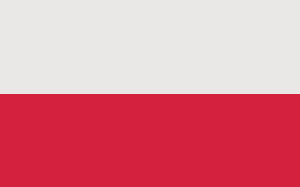
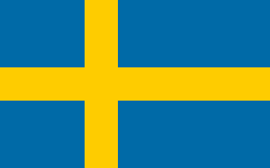

1. Polska
Państwo unitarne w Europie Środkowej, położone między Morzem Bałtyckim na północy a Sudetami i Karpatami na południu, w przeważającej części w dorzeczu Wisły i Odry

2. Niemcy
Państwo federacyjne położone w zachodniej i środkowej Europie. Składa się z 16 krajów związkowych (landów), a jego stolicą i największym miastem jest Berlin.

3. Francja
Państwo, którego część metropolitalna znajduje się w Europie Zachodniej, posiadające także zamorskie terytoria na innych kontynentach.
4. Wielka Brytania
Unitarne państwo wyspiarskie w Europie Zachodniej. W skład Wielkiej Brytanii zalicza się Anglia, Walia Szkocja i Irlandia.

5. Hiszpania
Państwo w zachodniej części Europy Południowej, położone głównie na Półwyspie Iberyjskim, obejmujące także Baleary na Morzu Śródziemnym, Wyspy Kanaryjskie na Oceanie Atlantyckim, mniejsze wysepki oraz tereny w północnej Afryce.

6. Rosja
Państwo federacyjne rozciągające się od Europy Wschodniej (z eksklawą w Europie Środkowej) przez północną część Azji do Oceanu Spokojnego.

7. Szwecja
Państwo w Europie Północnej, zaliczane do państw skandynawskich. Szwecja jest członkiem Unii Europejskiej od 1995 roku.
